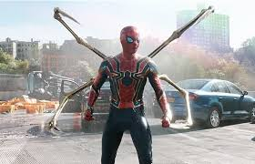

Spider-Man is a superhero appearing in American comic books
published by Marvel Comics. Created by writer-editor Stan Lee and
artist Steve Ditko, he first appeared in the anthology comic book
Amazing Fantasy #15 (August 1962) in the Silver Age of Comic
Books. He has since been featured in movies, television shows,
video games, and plays. Spider-Man is the alias of Peter Parker,
an orphan raised by his Aunt May and Uncle Ben in New York City
after his parents Richard and Mary Parker died in a plane crash.
Lee and Ditko had the character deal with the struggles of
adolescence and financial issues and gave him many supporting
characters, such as Flash Thompson, J. Jonah Jameson and Harry
Osborn, romantic interests Gwen Stacy, Mary Jane Watson and the
Black Cat, and foes such as Doctor Octopus, the Green Goblin and
Venom. In his origin story, he gets spider-related abilities from
a bite from a radioactive spider; these include clinging to
surfaces, superhuman strength and agility, and detecting danger
with his "spider-sense." He also builds wrist-mounted
"web-shooter" devices that shoot artificial spider webs of his own
design.